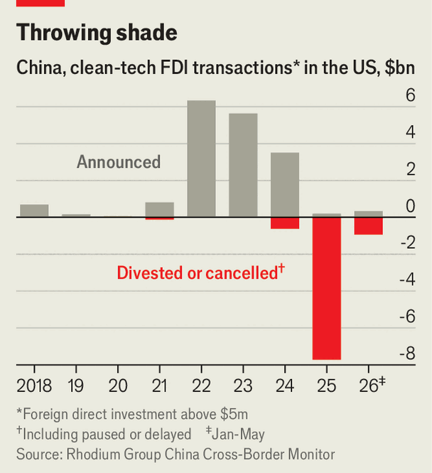

Donald Trump is kicking out Chinese firms, but keeping their tech
China’s stranded assets are creating a new class of American green-tech investors
July 2nd 2026

In a factory in Dallas, an American flag hangs from the ceiling. Beneath it, 1,200 workers and some state-of-the-art robots churn out 20,000 solar panels a day, a tenth of America’s total output. The location has a capacity of 5gw, meaning it makes enough solar modules each year to power 1m American homes. “Never bet against the United States’s engineering and innovation,” effuses Russell Gold, an executive at t1 Energy. But the facility was not always so star-spangled. Trina Solar, a Chinese giant, built it in 2024, before selling up just days after it entered operation.

All over America, Chinese firms are divesting clean-energy assets at fire-sale prices: since 2025 almost $9bn of Chinese renewables investment in America has been cancelled, paused or sold to local investors, up from none in 2022 and 2023 (see chart). Some assets have traded at discounts of as much as 40%, says one buyer. The sell-off was triggered by a little-noticed change in America’s tax law last year, meant to purge Chinese influence from the clean-energy sector. American investors are enjoying a windfall as they snap up assets from industry leaders. Whether these transactions will reduce dependence on China is another matter.
America’s clean-energy sector had been becoming increasingly Chinese, even as relations between the two countries soured. From 2022 to 2024, Chinese firms committed $15.5bn to green-energy projects, nine times as much as in the previous four years. Foreign markets offered Chinese producers respite from brutal, profitless competition at home. America was particularly appealing owing to generous subsidies for battery and solar assets introduced by Joe Biden’s administration. They helped drive annual solar-module production capacity up by half, to 65gw last year. China-linked producers made up 25gw of the total.
Now all that is at risk. The change in the law was initiated by Donald Trump’s One Big Beautiful Bill Act. Since it was passed in July 2025, firms with connections to China have been banned from getting subsidies. One of the affected programmes, called Section 45x, reduces a firm’s tax bill by seven cents for every solar-module watt and $35 for every battery-cell kilowatt-hour it makes. For a 5gw solar-manufacturing facility, like the one Trina Solar built in Dallas, the handout could amount to $350m a year. Rhodium Group, a research firm, says more than half of Chinese clean-energy investments since 2022 have been cancelled, paused or delayed.
Chinese operators that have already built solar and battery assets have been identified as “Foreign Entities of Concern” (feoc), alongside firms from Iran, North Korea and Russia. Regulators have taken a strict interpretation of the feoc rule, says Herbert Crowther of Eurasia Group, a consultancy. A Chinese entity can have no more than a 25% stake in a factory, the facility must not rely on licensed Chinese technology and it must buy less than 50% of the value of its inputs from Chinese suppliers—a figure that will fall to 15% in 2030.

The restrictions are a hammer blow to Chinese investors. In a filing to the Shanghai Stock Exchange in April, Boway, a Chinese industrial firm, said that its solar-module factory in North Carolina had become unprofitable after the withdrawal of government money. Even for those that can afford to operate without tax credits, competing against subsidised domestic suppliers is a losing battle, as Western firms in China have learned. Uncertainty about whether producers, even after big restructurings, will be able to satisfy American authorities has led some solar installers, banks and insurers to pause doing business with manufacturers out of concern that their tax credits will never arrive. Indeed, American authorities are said to have expected, and hoped, that Chinese producers would leave the market altogether before introducing the new rules.
As a result of the legal changes, billions of dollars in assets, technology and know-how are being transferred to American investors. Corning, an American firm, bought a 2gw solar-module factory in Arizona for an undisclosed sum last year. Boway sold its new 3gw factory in North Carolina for $254m in May, 15% less than it cost to build. The assembly lines left by retreating firms are full of Chinese technology, intended to assemble Chinese-designed solar panels with Chinese-made inputs. Other firms, wanting to keep their foothold in the American market and find ways to hang on to the tax credits, are creating joint ventures with local partners, says Mona Dajani of Cooley, a law firm.
Joint ventures can improve the competitiveness of local industry by sharing technology, as China showed in the 1990s. This time, however, there will be fewer spillover benefits, since many ventures appear superficial. At least one transaction exists more on paper than on the factory floor: Canadian Solar shifted its American assets from a Chinese subsidiary back to its Canadian parent by, in effect, creating a joint venture with itself. “The goal is compliance, not integration,” says Ms Dajani.
In part, that is because the activities of Chinese firms abroad are being watched more closely by authorities at home. America has forced sales of high-profile Chinese assets, including TikTok, a video app, and ports on the Panama Canal. New rules to protect China’s investments abroad took effect on July 1st. They include clamping down on technology exports. The measures also promise retaliation against “discriminatory measures” taken by foreign governments. Nancy Sun, a lawyer in Shanghai, says the rules “encourage the Chinese company to say ‘no’”.
American clean-tech firms worry that merging with a Chinese partner will anger the Trump administration. Chinese firms want to avoid handing their tech to competitors. So many assets are being bought by financial investors, not clean-tech manufacturers. Jinko Solar sold 75% of its 2gw solar facility in Florida to fh Capital, an American investor. “There is a marriage of convenience where the us partners get a majority of the financial upside, but the Chinese partner is…delivering the operational competency,” says Mr Crowther.
Disentangling from Chinese supply chains is difficult in any industry. In clean technology, China is almost inescapable. It makes 95% of the world’s polysilicon, the main input to solar panels. Investors The Economist spoke to refused to say where their inputs would now come from: the ability to source scarce non-Chinese materials is a commercial advantage. Others have work-arounds to limit their links to China. Trina Solar, for example, sold its intellectual property to a Singaporean firm so that t1 Energy could license it.
Mr Trump’s legislation sought to scupper the green-energy boom. Instead, it may end up shaping a new generation of American green-tech investment. Mr Gold’s firm is building a factory in Austin for solar cells to be used in modules made down the road in Dallas. fh Capital plans to double capacity at its Florida facility and begin making batteries. The industry is rebranding itself as “non-woke”, trying to divert government hostility to clean energy.
In fact, the industry is now invoking America’s competition with China in an attempt to extract support from the government. Saudi Arabia was once the largest oil producer, and Russia used to supply most of the world’s natural gas, muses Mr Gold. Today America is the energy superpower. Still, “China is the largest producer of solar panels,” he says. Having picked the fruits of China’s investment, America’s clean-energy industry now needs higher tariffs on imports of Chinese polysilicon, he claims. “Then we can be globally competitive.” ■
Subscribers can sign up to Drum Tower, our new weekly newsletter, to understand what the world makes of China—and what China makes of the world.